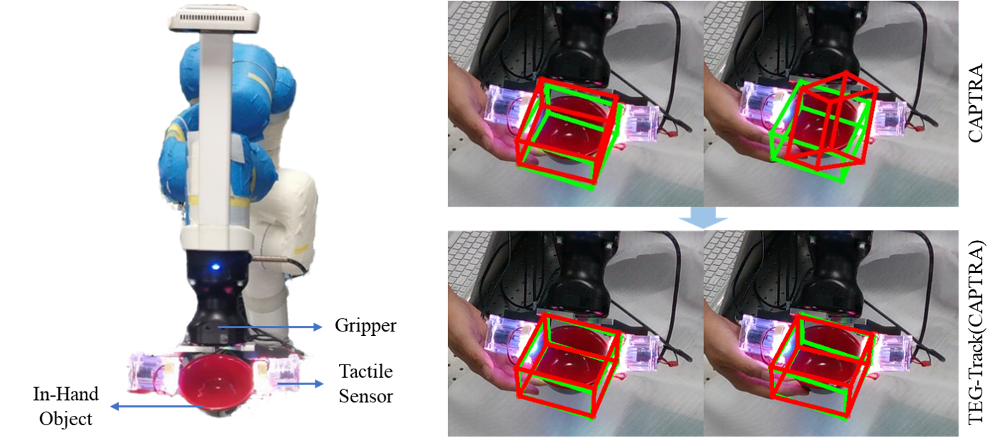

Publications

JacobiNeRF: NeRF Shaping with Mutual Information Gradients
Xiaomeng Xu, Yanchao Yang, Kaichun Mo, Boxiao Pan, Li Yi, Leonidas J. Guibas
CVPR 2023.
Paper |
Project | Video | Code

Enhancing Generalizable 6D Pose Tracking of an In-Hand Object with Tactile Sensing
Xiaomeng Xu*, Yun Liu*, Weihang Chen, Haocheng Yuan, He Wang, Jing Xu, Rui Chen, Li Yi
Paper

AutoGPart: Intermediate Supervision Search for Generalizable 3D Part Segmentation
Xueyi Liu, Xiaomeng Xu, Anyi Rao, Chuang Gan, Li Yi
CVPR 2022.
Paper |
Project | Code

ViviPaint: Creating Dynamic Painting with a Thermochromic Toolkit
Guanhong Liu, Tianyu Yu, Zhihao Yao, Haiqing Xu, Yunyi Zhang, Xuhai Xu, Xiaomeng Xu, Mingyue Gao, Qirui Sun, Tingliang Zhang, Haipeng Mi
MTI 2022.
Paper
* equal contribution